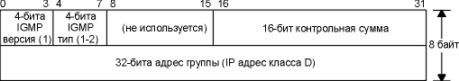
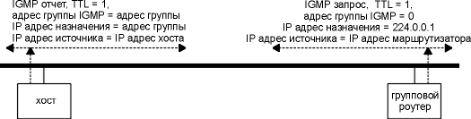

Глава 13 IGMP: протокол управления группами Internet
В разделе "Рассылка групповых сообщений" главы 12 приводится общее описание групповой адресации IP и описывается, как IP адреса класса D преобразуются в Ethernet адреса. Мы кратко упомянули, как осуществляется групповая рассылка в сети, состоящей из одного физического кабеля, однако отложили на потом рассмотрение вопроса, что происходит при групповой адресации в нескольких сетях и каким образом групповые датаграммы проходят через маршрутизаторы.
В этой главе мы рассмотрим протокол управления группами Internet (IGMP - Internet Group Management Protocol), который используется хостами и маршрутизаторами, для того чтобы поддерживать групповую рассылку сообщений. Он позволяет всем системам физической сети знать, какие хосты в настоящее время объединены в группы и к каким группам они принадлежат. Эта информация необходима для групповых маршрутизаторов, именно так они узнают, какие групповые датаграммы необходимо перенаправлять и на какие интерфейсы. IGMP определен в RFC 1112 [Deering 1989].
Как и ICMP, IGMP является частью IP уровня. Так же как ICMP, IGMP сообщения передаются в IP датаграммах. В отличие от других протоколов, которые мы уже рассмотрели, IGMP имеет сообщение фиксированного размера, без необязательных данных. На рисунке 13.1 показана инкапсуляция IGMP сообщения в IP датаграмму.

Рисунок 13.1 Инкапсуляция IGMP сообщения в IP датаграмму.
На то, что в IP датаграмме находится IGMP сообщение, указывает величина в поле протокола равная 2.
На рисунке 13.2 показан формат 8-байтового IGMP сообщения.

Рисунок 13.2 Формат полей IGMP сообщения.
Поле версии IGMP (IGMP version) установлено в 1. Поле тип IGMP (IGMP type) устанавливается в 1 для запроса, посылаемого групповым маршрутизатором, и в 2 для ответа, отправляемого хостом. Контрольная сумма (checksum) рассчитывается так же, как контрольная сумма ICMP.
Групповой адрес (group address) это IP адрес класса D.. В запросе поле группового адреса устанавливается в 0. В отчете оно содержит групповой адрес. Мы расскажем более подробно об этом в следующих разделах, когда будем говорить о том, как функционирует IGMP.
Протокол IGMP
Вступление в группу
Фундаментальной концепцией для работы группы является то, что процесс вступает в группу с определенным интерфейсом хоста. (Мы используем термин процесс, который обозначает программу, которая запущена операционной системой.) Членство в группе динамическое - со временем процесс может как вступать, так и выходить из группы.
Естественно, процесс должен иметь возможность вступить в группу с указанным интерфейсом. Процесс также может покинуть группу, в которую он до этого вступил. Для вступления в группу и выхода из группы требуется, чтобы какой-либо API на хосте поддерживал групповую рассылку. Мы используем выражение "интерфейс", потому что членство в группе связано с интерфейсом. Процесс может вступить в одну и ту же группу с разных интерфейсов.
Релиз IP, поддерживающий групповую рассылку в Berkeley Unix Стэндфордского университета, детализирует эти изменения сокетов API. Эти изменения также присутствуют в Solaris 2.x и описаны в страницах помощи ip(7).
Поэтому идентификатор хоста в группе это адрес группы и интерфейс. Хост должен помнить таблицу всех групп, к которым принадлежит хотя бы один процесс, и счетчик обращений, то есть количество процессов, принадлежащих к группе.
IGMP сообщения используются групповыми маршрутизаторами, чтобы поддерживать членство в группах для каждой сети, физически подключенной к маршрутизатору. Существуют следующие правила.
- Хост отправляет первый IGMP отчет, когда первый процесс вступает в группу. Если несколько процессов на данном хосте вступили в одну и ту же группу, отправляется только один отчет, в тот момент, когда процесс первый раз вступил в группу. Отчет посылается на тот же интерфейс, с которым процесс вступил в группу.
- Хост не посылает отчет, когда процесс выходит из группы, даже когда последний процесс вышел из группы. Хост знает, что в этой группе больше нет членов, поэтому когда он получает следующий запрос (следующий шаг), он не отправляет отчет.
- Групповой маршрутизатор отправляет IGMP запрос с регулярными интервалами, чтобы выяснить, принадлежат ли процессы каких-либо хостов к каким-либо группам. Маршрутизатор послает один запрос на каждый интерфейс. Групповой адрес в запросе установлен в 0, так как маршрутизатор ожидает приход одного отклика от хоста для каждой группы, к которой от хоста принадлежит один или несколько членов.
- Хост отвечает на IGMP запрос посылкой одного IGMP отчета для каждой группы, которая содержит хотя бы один процесс.
С использованием этих запросов и отчетов групповой маршрутизатор поддерживает таблицу, содержащую информацию о том, на котором из его интерфейсов имеется один или несколько хостов в группе. Когда маршрутизатор получает групповую датаграмму, которую необходимо перенаправить, он перенаправляет ее (с использованием соответствующего группового адреса канального уровня) только на тот интерфейс, на котором до сих пор есть хосты, процессы которох принадлежат к этой группе.
На рисунке 13.3 показаны два типа IGMP сообщений, отчеты, отправленные хостом, и запросы, отправленные маршрутизатором. Маршрутизатор опрашивает каждый хост, чтобы тот идентифицировал каждую группу для данного интерфейса.

Рисунок 13.3 IGMP отчеты и запросы.
Мы поговорим о поле TTL позже в этом разделе.
Детали реализации
В протоколе существуют некоторые аспекты, которые улучшают его производительность. Во-первых, когда хост посылает исходный IGMP отчет (когда первый процесс вступил в группу), не существует гарантии, что этот отчет будет доставлен (так как используется средство доставки IP). Позже отправляется еще один отчет. Время, когда будет отправлен следующий отчет, выбирается хостом случайным образом, причем значение времени находится в диапазоне от 0 до 10 секунд.
Когда хост получает запрос от маршрутизатора, он не отвечает сразу же, а откладывает ответы на более позднее время. (Мы используем множественное число "ответы", потому что хост должен послать один отчет для каждой группы, которая содержит одного или несколько членов.) Так как несколько хостов могут отправить отчет для одной и той же группы, каждый отправляет свой отчет с задержкой, выбранной случайным образом. Также обратите внимание на то, что все хосты подключенные к одной физической сети получают все отчеты от других хостов, находящихся в той же группе, потому что адрес назначения отчета (см. рисунок 13.3) - это групповой адрес. А это, в свою очередь, означает, что если хост отложил момент отправки отчета, однако получил копию того же самого отчета от другого хоста, ответ может быть отменен. Это объясняется тем, что групповому маршрутизатору нет необходимости знать, сколько хостов принадлежит к группе - ему достаточно знать, что по крайней мере один хост принадлежит к группе.
На одном физическом кабеле без групповых маршрутизаторов, траффик, принадлежащий IGMP, - это отчеты, которые отправляются хостами, поддерживающими групповую адресацию IP, когда они вступают в новую группу.
Поле времени жизни
На рисунке 13.3 мы видели, что поле TTL в отчете и запросе установлено в 1. Это напоминает обычное TTL поле в IP заголовке. Групповая датаграмма с TTL исходно равным 0 не "уйдет" дальше своего хоста. По умолчанию групповые датаграммы рассылаются с TTL равным 1. Это позволяет датаграммам распространяться только в своей подсети. Значение TTL больше единицы может быть установлено групповым маршрутизатором.
Обратитесь к разделу "Типы сообщений ICMP" главы 6, где говорится, что ICMP ошибка никогда не генерируется в ответ на датаграмму, направляемую на групповой адрес. Групповые маршрутизаторы не генерируют ICMP ошибку "время истекло" (time exceeded), когда значение TTL становится равным 0.
Обычно, пользовательский процесс не заботится о значении исходящего TTL. Одно исключение, пожалуй, программа Traceroute (см. главу 8), принцип работы которой основан как раз на изменении значения поля TTL. Однако, приложения, которые работают с групповой адресацией, должны иметь возможность установить исходящее поле TTL. Это означает, что программный интерфейс должен предоставлять эту возможность пользовательским процессам.
Путем увеличения TTL приложение может осуществить расширенный поиск (expanding ring search) конкретного сервера. В этом случае первая групповая датаграмма посылается с TTL равным 1, если ответ не получен, посылается датаграмма с TTL равным 2, затем 3 и так далее. В этом случае приложение определяет положение ближайшего сервера в количествах пересылок.
Специальный диапазон адресов 224.0.0.0 - 224.0.0.255 отводится для приложений, которые не будут рассылать групповые запросы дальше чем на одну пересылку. Групповые маршрутизаторы не должны перенаправлять датаграммы с такими адресами назначения, вне зависимости от TTL.
Группа всех хостов (All-Hosts)
На рисунке 13.3 мы видели, что IGMP запрос от маршрутизатора отправляется на IP адрес назначения 224.0.0.1. Этот адрес называется адресом группы всех хостов (all-hosts). Он имеет отношение ко всем хостам и маршрутизаторам подключенным к физической сети и поддерживающим групповую адресацию. Каждый хост автоматически вступает в эту группу со всеми интерфейсами, которые поддерживают групповую адресацию, при инициализации интерфейса. О членстве в этой группе никогда не сообщается (рассылкой отчетов).
Сейчас, когда мы рассмотрели некоторые особенности групповой адресации IP, давайте посмотрим на то, как рассылаются сообщения. Мы добавили поддержку групповой адресации IP на хосте sun, а также воспользовались некоторыми тестовыми программами, которые присутствуют в программном обеспечении, работающем с групповой адресацией.
Во-первых, мы используем модифицированную версию команды netstat, которая сообщает о членстве в группах для каждого интерфейса. (Стандартный вывод netstat -ni для этого хоста приводится в разделе "Команда netstat" главы 3.) Ниже мы выделили строки, имеющие отношение к группам, жирным шрифтом:
sun % netstat -nia
Name Mtu Network Address
Ipkts
Ierrs Opkts Oerrs Coll
le0 1500 140.252.13. 140.252.13.33
4370 0
4924 0 0
224.0.0.1
08:00:20:03:f6:42
01:00:5e:00:00:01
sl0 552 140.252.1 140.252.1.29
13587 0
15615 0 0
224.0.0.1
lo0 1536 127
127.0.0.1
1351
0 1351 0
0
224.0.0.1
Так как указана опция -n, IP адреса печатает в цифровом формате (а не в виде имен), -i печатает статистику по интерфейсам, и -a предоставляет отчет о всех сконфигурированных интерфейсах.
Вторая строка в выводе для le0 (Ethernet) сообщает о том, что этот интерфейс принадлежит к группе 224.0.0.1 (группа "все хосты"), а через одну строку показан соответствующий Ethernet адрес: 01:00:5e:00:00:01. Это как раз то, что мы и ожидали для Ethernet адреса. Подобное соответствие описано в разделе "Рассылка групповых сообщений" главы 12. Мы видим, что два других интерфейса, которые поддерживают рассылку групповых сообщений, канал SLIP - sl0 и loopback интерфейс lo0, также принадлежат к группе всех хостов.
Для маршрутизации групповых датаграмм используется обычная таблица маршрутизации. Пункты, помеченные жирным шрифтом, показывают все датаграммы для 224.0.0.0, отправлены в Ethernet:
sun % netstat -rn
Routing tables
Destination Gateway
Flags Refcnt Use
Interface
140.252.13.65 140.252.13.35 UGH
0 32
le0
127.0.0.1 127.0.0.1
UH 1
381 lo0
140.252.1.183 140.252.1.29 UH
0 6
sl0
default 140.252.1.183
UG 0
328 sl0
224.0.0.0 140.252.13.33 U
0 66
le0
140.252.13.32 140.252.13.33 U
8 5581
le0
Если Вы сравните эту таблицу маршрутизации с той, которую мы показали в разделе "Принципы маршрутизации" главы 9 для маршрутизатора sun, то увидите, что единственным отличием является запись для группы.
А сейчас запустим тестовую программу, которая позволит вступить в группу для определенного интерфейса. (Вывод этой тестовой программы не приводится.) Мы вступили в группу 224.1.2.3 с интерфейсом Ethernet (140.252.13.33). Исполнение netstat показывает, что ядро вступило в группу Ethernet адресом, как мы и ожидали. Отличия от предыдущего вывода команды netstat приведены жирным шрифтом:
sun % netstat -nia
Name Mtu Network Address
Ipkts Ierrs
Opkts Oerrs Coll
le0 1500 140.252.13. 140.252.13.33
4374 0
4929 0 0
224.1.2.3
224.0.0.1
08:00:20:03:f6:42
01:00:5e:01:02:03
01:00:5e:00:00:01
sl0 552 140.252.1 140.252.1.29
13862 0
15943 0 0
224.0.0.1
lo0 1536 127
127.0.0.1
1360
0 1360 0
0
224.0.0.1
Здесь снова показан вывод для двух других интерфейсов, sl0 и lo0, из чего видно, что в группу вступил только один интерфейс.
На рисунке 13.4 показан вывод команды tcpdump, соответствующий процессу вступления в группу.
1 0.0
8:0:20:3:f6:42
1:0:5e:1:2:3 ip 60:
sun
> 224.1.2.3: igmp report 224.1.2.3 [ttl 1]
2 6.94 (6.94) 8:0:20:3:f6:42
1:0:5e:1:2:3 ip 60:
sun
> 224.1.2.3: igmp report 224.1.2.3 [ttl 1]
Рисунок 13.4 Вывод команды tcpdump при вступлении хоста в группу.
Строка 1 соответствует моменту, когда хост вступает в группу. Следующая строка - это задержанный отчет, который, как мы говорили, отправляется с некоторой случайной задержкой (до 10 секунд).
В этих двух строках показаны аппаратные адреса, чтобы убедиться в том, что адрес назначения Ethernet это корректный групповой адрес. Также стоит убедиться в том, что IP адрес источника это один из соответствующих адресов sun, а IP адрес назначения это групповой адрес. Адрес, сообщенный в отчете, - это тот же групповой адрес.
И в заключение, необходимо отметить, что значение TTL установлено в 1, как было указано ранее. Команда tcpdump печатает TTL в квадратных скобках, когда его значение равно 0 или 1. Это потому, что TTL обычно больше, чем эти значения. В случае групповой адресации мы ожидаем увидеть множество IP датаграмм с TTL равным 1.
Из этого вывода видно, что групповой маршрутизатор должен воспринимать все групповые датаграммы на всех своих интерфейсах. Маршрутизатор не имеет представления, в какую группу должен вступить хост.
Пример работы группового маршрутизатора
Давайте продолжим предыдущий пример, однако сейчас запустим демон групповой маршрутизации на хосте sun. В данном случае нас интересуют не детали реализации протоколов групповой маршрутизации, а то, как происходит обмен IGMP запросами и отчетами. Даже несмотря на то, что демон групповой маршрутизации запущен только на одном хосте, и только этот (единственный) хост поддерживает групповую адресацию (sun), групповые запросы и отчеты перемещаются по Ethernet.
Перед стартом демона маршрутизации мы вступили в другую группу: 224.9.9.9. На рисунке 13.5 показан вывод.
1 0.0 sun > 224.0.0.4: igmp report 224.0.0.4
2 0.00 ( 0.00)
sun > 224.0.0.1: igmp
query
3 5.10 ( 5.10)
sun > 224.9.9.9: igmp
report 224.9.9.9
4 5.22 ( 0.12)
sun > 224.0.0.1: igmp
query
5 7.90 ( 2.68)
sun > 224.1.2.3: igmp
report 224.1.2.3
6 8.50 ( 0.60)
sun > 224.0.0.4: igmp
report 224.0.0.4
7 11.70 ( 3.20)
sun > 224.9.9.9: igmp
report 224.9.9.9
8 125.51 (113.81) sun
> 224.0.0.1: igmp query
9 125.70 ( 0.19)
sun > 224.9.9.9: igmp
report 224.9.9.9
10 128.50 ( 2.80)
sun > 224.1.2.3: igmp
report 224.1.2.3
11 129.10 ( 0.60)
sun > 224.0.0.4: igmp
report 224.0.0.4
12 247.82 (118.72) sun
> 224.0.0.1: igmp query
13 248.09 ( 0.27)
sun > 224.1.2.3: igmp
report 224.1.2.3
14 248.69 ( 0.60)
sun > 224.0.0.4: igmp
report 224.0.0.4
15 255.29 ( 6.60)
sun > 224.9.9.9: igmp
report 224.9.9.9
Рисунок 13.5 Вывод команды tcpdump за время работы демона маршрутизации.
Мы не включили Ethernet адреса в этот вывод, потому что уже убедились в том, что они именно такие, какие должны быть. Также мы удалили весь вывод, посвященный TTL равным 1, потому что они также соответствуют ожидаемым.
В строке 1 показан момент старта демона маршрутизации. Он отправляет отчет о том, что вступил в группу 224.0.0.4. Групповой адрес 224.0.0.4 - это заранее известный адрес и используется протоколом групповой маршрутизации вектора расстояний (DVMRP - Distance Vector Multicast Routing Protocol). Это протокол используется в настоящее время для групповой маршрутизации. (DVMRP описан в RFC 1075 [Waitzman, Partridge, and Deering 1988].)
При старте демон посылает запрос (строка 2). IP адрес назначения в запросе 224.0.0.1 (все хосты), как показано на рисунке 13.3.
Первый отчет (строка 3) приходит примерно через 5 секунд, для группы 224.9.9.9. Это единственный отчет, принятый перед тем, как был отправлен следующий запрос (строка 4). Два запроса (строки 2 и 4) отправляются с небольшим промежутком в момент старта демона, так как он пытается построить групповую таблицу маршрутизации.
В строках 5, 6 и 7 мы видим по одному отчету для каждой группы, к которой принадлежит хост sun. Обратите внимание, что принят отчет от группы 224.0.0.4, в дополнение к двум группам, в которые мы вступили, потому что в то время пока работает демон, он принадлежит к этой группе.
Следующий запрос в строке 8 появляется через 2 минуты после предыдущего запроса. В ответ на него также приходит три отчета (строки 9, 10 и 11). В этот раз отчеты приходят в другом порядке, так как время между приходом запроса и отправкой отчета выбирается случайным образом.
И последний запрос, отправляется примерно через 2 минуты после предыдущего запроса, и снова получены ожидаемые отклики.
Групповая рассылка это способ разослать сообщения нескольким получателям. Для многих приложений это вариант предпочтительней, нежели рассылка широковещательных запросов, так как с помощью групповой рассылки можно уменьшить загруженность хостов, которые не заинтересованы в принятии сообщений. Простой протокол, определяющий принадлежность хостов к группе (IGMP), - это краеугольный камень, на котором строится групповая адресация.
Групповая адресация в локальной сети или в соседних, соединенных между собой локальных сетях, использует технику, которую мы описали в этой главе. Так как рассылка широковещательных запросов обычно ограничивается одной локальной сетью, групповые запросы могут быть использованы вместо широковещательных для различных предложений, которые в настоящее время используют широковещательные запросы.
Однако, для глобальных сетей проблема групповых запросов до сих пор до конца не решена. [Deering and Cheriton 1990] предлагает расширение существующих протоколов маршрутизации для поддержки групповых запросов. В разделе 9.13 [Perlman 1992] обсуждаются некоторые проблемы, связанные с групповыми запросами в глобальных сетях.
[Casner and Deering 1992] описывает доставку звуковой информации для IETF конференций по Internet с использованием групповых запросов и виртуальной сети, которая называется MBONE (групповая магистраль).
Упражнения